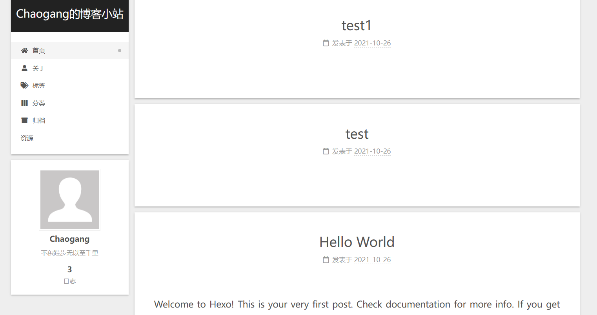

基于hexo和git page的个人博客
在github搭建一个特殊名字的仓库，你的用户名.github.io，就可以当做网址访问了。
hexo是一个基于npm博客设置引擎，搭建方式很简单。
git仓库的搭建
在github搭建一个名字为
你的用户名.github.io的仓库，仓库中一定要放初始文件，否则不能把仓库初始化成git page。在git bash中使用命令
git config --global user.name = "your github user name"&&git config --global user.email = "you github email"设置git用户名和邮箱。ssh-keygen -C "you email address"生成密钥，之后将秘钥上传到github的个人设置页面。可以在
git clone时就选择ssh链接：git clone git@github.com:username/reponame.git，或者把本地仓库的.git/config文件中[remote "origin"]代码段中的url字段修改为git@github.com:username/reponame.git。
hexo环境的搭建
可以参考这篇博客：个人博客第5篇——安装node.js和Hexo - 知乎 (zhihu.com)
先打开一个空的仓库，例如D://Blog，安装并初始化hexo控件。
1 | npm install -g hexo-cli # 安装hexo控件 |
如果需要本地访问，可以使用下面的命令，运行之后打开浏览器，在地址栏输入localhost:4000就可以访问。
1 | hexo s # 将博客挂在到 http://localhost:4000，直接在地址栏输入这个地址即可本地访问 |
本地预览没有问题之后，可以进行远程推送了。
在第一次远程推送之前，首先打开根目录D://Blog，在目录下找到_config.yml，使用记事本打开，在文件底部添加
1 | deploy: |
然后打开git bash，安装Git部署插件
1 | npm install hexo-deployer-git --save |
最后输入下面三条命令
1 | hexo clean #清除缓存文件 db.json 和已生成的静态文件 public |
打开浏览器，输入https://用户名.github.io 就可以打开网页了！
主题更改可以参考这两篇文章
个人博客第7篇——设置next主题 - 知乎 (zhihu.com)
个人博客第8篇——优化主题（持续更新） - 知乎 (zhihu.com)
设置完毕之后就可以实现这样的效果了：
